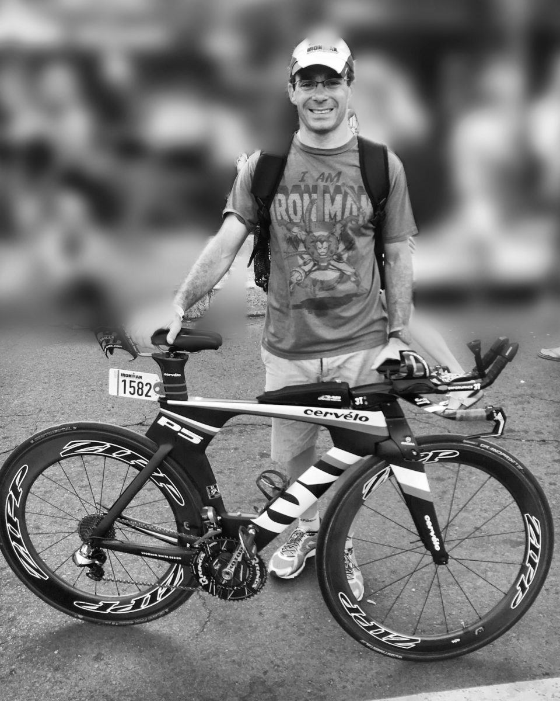

I work from investment case to exit as chief executive, board member or adviser.
Advised London Gynaecology through its sale to private equity, then became its first chief executive after the investment. Co-founded Digme Fitness and grew it to eight sites. Founded Clava.
I advise private equity firms and private investors before and after a deal and on deal execution. Mandates cover:
I bring operating scars and governance discipline to founder-led, VC-backed and PE-backed boards. Current roles are Non-Executive Director at Clava and Board Adviser to the founders of Sync Your Cycle. My advisory and non-executive experience spans consumer-facing and B2B technology businesses.
I take on a small number of permanent and interim leadership and value-creation mandates in technology, consumer, leisure and healthcare. My specialism is building platforms and teams ready for growth and for a deal. As a technology-literate leader who puts people first I build fast-moving teams with clear accountability.
Being a CEO can be the best job in the world and the loneliest. Your C-suite can turn to you; you have nobody to turn to. Flightpath gives you a trusted confidant who has sat where you sit: a fixed weekly hour, availability in between, board pack reviews and a second opinion on senior hires. You engage me, not the board and not the founders. I work with very few clients at any one time.
About Flightpath →I have spent my career building multi-site businesses in healthcare and leisure as a founder, as the first CEO appointed after private equity investment and now as an adviser and non-executive. Experience has taught me the hard way that enduring companies depend on systems more than on any one person.
As author and publisher of the Bamber Global Prestige Index I rank the world's most prestigious cities, coasts, ski resorts and wine country each year and score every destination out of 100.
Home is Richmond upon Thames. I am an eleven-time Ironman and a former competitive ski racer; I build companies with the same structured, repeatable effort.

I take on a small number of engagements at a time. If the fit is right I would like to hear from you.